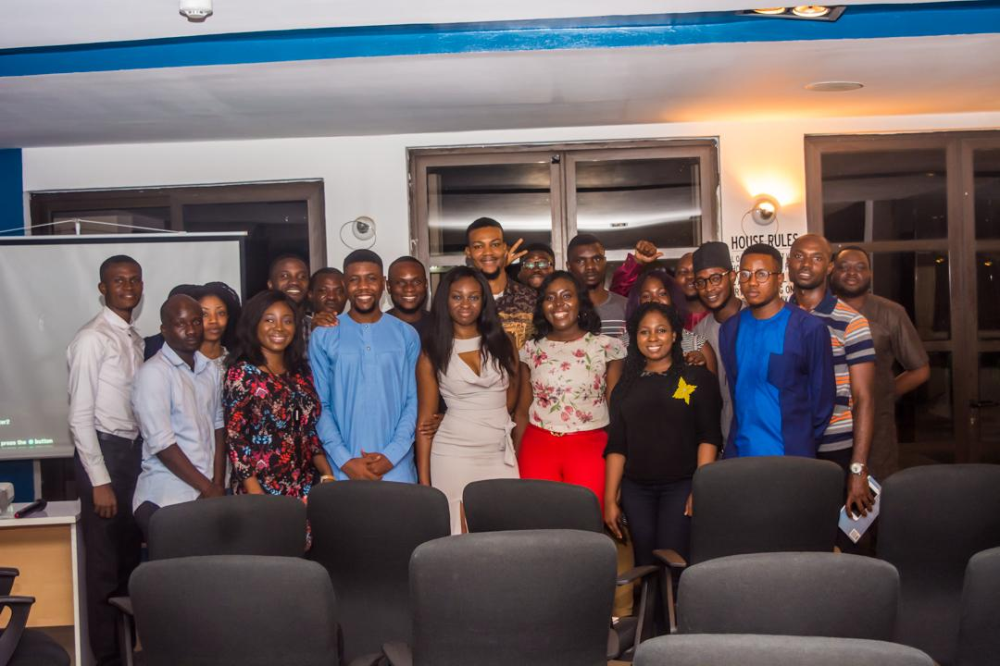
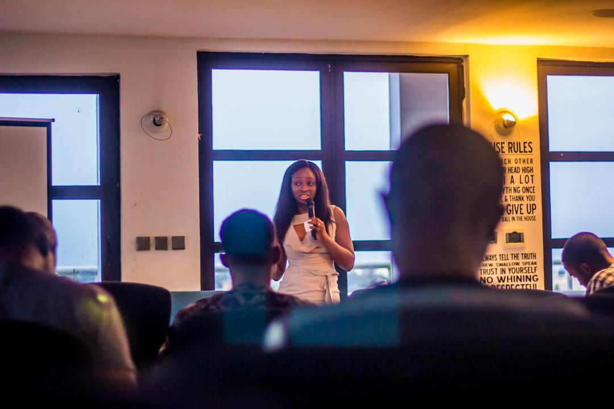
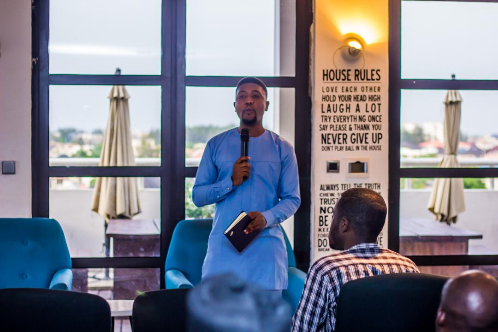
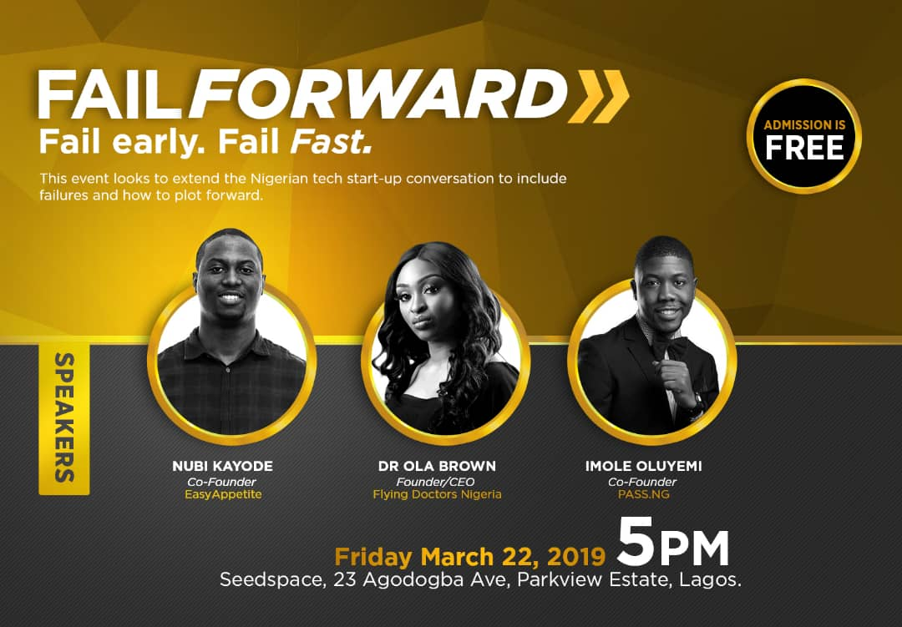

On Friday night March 22nd, budding startup founders and veterans with a spectre of entrepreneurially-minded professionals came together to discuss, for the first time in the Nigerian startup scene, the failure stories of their startup ventures and what we could learn from them. It was an emotional and reflective episode with speakers and members of the audience gushing out about what went wrong, the pain of the demise and the indelible lessons that came from the experience.
Failure is still a taboo word in our ecosystem. As much as we try to model our ecosystem on Silicon, our attitude towards Failure is extremely different from Silicon Valley, where the popular Mantra “Fail Fast, Fail often” describes a community that embraces failure.
This can be largely attributed to a cultural tendency of conflating a failure event with the failure of self. To people around, if your startup failed, it is a pointer to a character flaw, an ineffectiveness of personal principles or some other diminishing trait, the type your mum warned you about to avoid in your teen years so as not to end up a “failure”. The malaise is so deep-rooted and pervasive within our society and is reinforced by the thin line between being up-and-doing and getting sunk into poverty. This is a society where a slight setback in a breadwinner’s finances (which many founders quickly become) can spell a return to poverty for an entire family.
In 2015, Fortune estimated that nine of ten startups will fail and in 2016, Huffington post said it was 95%. There has been little or no research on the rate of failure among African Startups, however, Stanbic IBTC once claimed that over 80% of Nigerian startups fail within their first five years. In other climes, many founders of failed startups tend to share their experience, probably partly as catharsis, but also so other would-be entrepreneurs can learn from their mistakes.
However, startup founders sometimes need to fail in order to find their way to success, while many budding founders coming behind them need to learn from the specific failure lessons in their journey to avoid the same pitfalls. Everyone has heard in gist-form the high profile cases of failure at Starcomms, HiTV and Konga but very few know the details nor have heard from the founders directly. This is what Fail Forward seeks to change.


Therefore, in its premiere edition, Fail Forward hosted renowned speakers including Dr Ola Brown, Founder of Flying Doctors Nigeria, Imole Seun, Co-Founder, Pass.ng and Nubi Kay, Co-Founder, Easy Appetite.
Dr Ola Brown shared her early days of not having a full grasp of her business plan and how it led to completely running out of money. She detailed her comeback and how she had to build her personal network to prevent similar epic knowledge or capital fails. Nubi Kay spoke about being too early to market and tackling a problem that no one would touch for good reason. Imole spoke about coming out of the shadows of a dead co-founder who had become synonymous with the company and how this almost meant the death of the company itself.

Fail Forward is billed to hold again in the second quarter of the year as it is a quarterly event. In addition to hosting veteran startup founders as speakers, its programme includes a breakout session for the audience to share their own experiences and lessons. In future editions, it would also include the #FailureTest, a pitch where founders pitch some of their plans and veterans identify possible failure points and proffer solutions.
Boye Oshinaga, a co-convener of the event who is a serial entrepreneur and co-founder of Riby Finance says “the Fail Forward team is made up of volunteers from multiple walks of life: professionals, veterans and the up and coming, and the discussion that has come out of that mix of people before and during the event has been both rich and instructive”.
According to Tunmise Hassan, convener of the event who is a Lawyer and Tech enthusiast, “What we are creating is a movement to stop relying on “failure gists” but to start hearing from the horse’s mouth and picking lessons to apply immediately in our ventures. Basically, we want to avoid a case in the startup ecosystem where history keeps repeating itself”.
To learn more about Fail Forward and how you can be a part of the event, send a mail to info@thefailforward.co.
please contact us on 09064909578 or info@thefailforward.co.
please contact us on membership@thefailforward.co
please contact us on business@thefailforward.co.